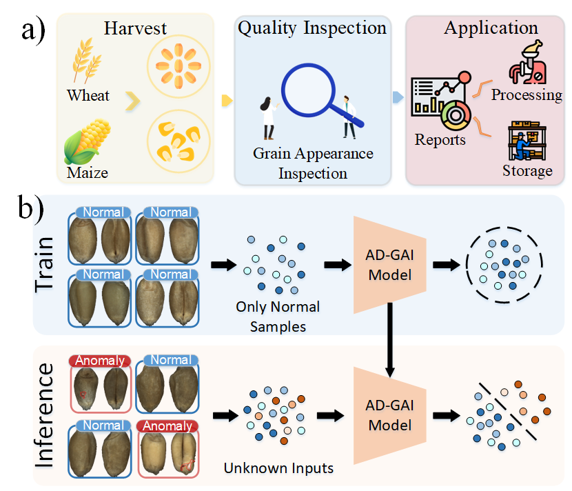
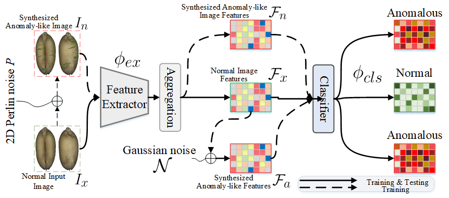

Role of GAI in agriculture. GAI is formulated as an AD problem.

Data Pre-processing and Annotation.

Cereal grain plays a crucial role in the human diet as a major source of essential nutrients. Grain Appearance Inspection (GAI) serves as an essential process to determine grain quality and facilitate grain circulation and processing. However, GAI is routinely performed manually by inspectors with cumbersome procedures, which poses a significant bottleneck in smart agriculture.
In this paper, we endeavor to develop an automated GAI system: AI4GrainInsp. By analyzing the distinctive characteristics of grain kernels, we formulate GAI as a ubiquitous problem: Anomaly Detection (AD), in which healthy and edible kernels are considered normal samples while damaged grains or unknown objects are regarded as anomalies. We further propose an AD model, called AD-GAI, which is trained using only normal samples yet can identify anomalies during inference. Moreover, we customize a prototype device for data acquisition and create a large-scale dataset including 220K high-quality images of wheat and maize kernels. Through extensive experiments, AD-GAI achieves considerable performance in comparison with advanced AD methods, and AI4GrainInsp has highly consistent performance compared to human experts and excels at inspection efficiency over 20× speedup.
The OOD-GrainSet dataset provides a comprehensive collection of high-quality images for cereal grain inspection. It includes over 220K images captured from two types of grains: Wheat and Maize. The dataset supports Anomaly Detection task.
The OOD-GrainSet dataset is licensed under the Creative Commons BY-NC-SA 4.0 license. Note that All data must not be used for commercial purposes.
You can access the dataset using the figshare links below:
@incollection{fan2023ai4graininsp,
title={Identifying the Defective: Detecting Damaged Grains for Cereal Appearance Inspection},
author={Fan, Lei and Ding, Yiwen and Fan, Dongdong and Wu, Yong and Pagnucco, Maurice and Song, Yang},
booktitle={ECAI 2023},
year={2023},
publisher={IOS Press}
}